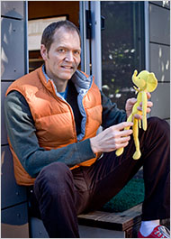

Doug Cutting y Hadoop
Mike Cafarella siendo extra épico
Hadoop fue creado originalmente por Doug Cutting y desarrollado después en conjunto con Mike Cafarella.
En un primer momento el objetivo era crear un programa que ayudara al funcionamiento de un motor de búsqueda denominado Nutch.
El nombre y logo de Hadoop viene de el peluche favorito del hijo de Doug Cutting, un elefante amarillo.